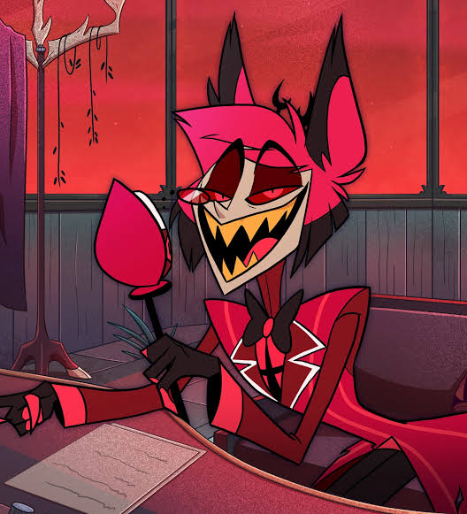

Alastor
ON AIR

"A smile is a valuable tool, my dear. It inspires your friends, keeps your enemies guessing, and ensures that, no matter what comes your way, you are the one in control
Alastor! Pleasure to be meeting you, quite a pleasure.

Don't touch my staff
Downloads a custom ZIP with your settings
Please go support the original artist here: spiritboxfm
I just made the website - if you want to support me, do it here: Ko-Fi